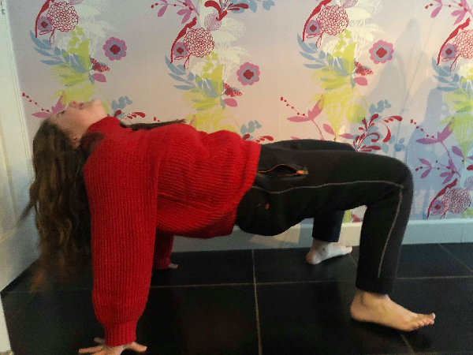
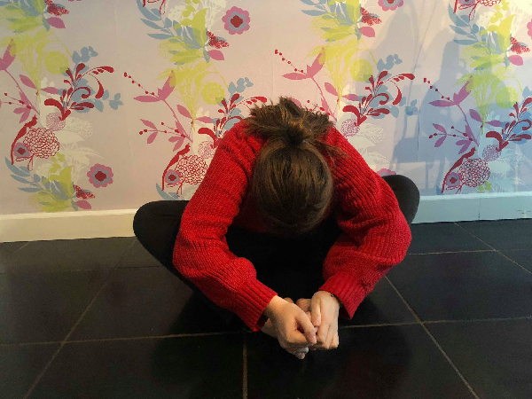

Zwemmen
Span jezelf op en adem diep in terwijl je je armen en benen omhoog brengt.

De wandelende krab
Neem deze positie aan en probeer zo door de klas te wandelen.

Article header with background image and parallax effect.
Bootstrap 4 has been noted as one of the most reliable and proven frameworks and Mobirise has been equipped to develop websites using this framework.
One of Bootstrap 4's big points is responsiveness and Mobirise makes effective use of this by generating highly responsive website for you.
Google has a highly exhaustive list of fonts compiled into its web font platform and Mobirise makes it easy for you to use them on your website easily and freely.
De kinderen zullen via de onderstaande foto’s de yogaposities aannemen en proberen deze allemaal 30 seconden vast te houden. Wanneer er meerdere stappen zijn om tot een positie te komen, houdt men deze ook 30 seconden vast.
Om te beginnen ga je in een startpositie staan. Sluit dan je ogen en voel aan hoe je lichaam momenteel heel ontspannen aanvoelt. Volg je ademhaling en concentreer je hier volledig op.
Lesdoelen
De leerlingen integreren rust in de klas en proberen hiermee om te gaan door dit te combineren met hun oefeningen.
De leerlingen interpreteren instructies van de leerkracht over hoe ze hun lichaam kunnen gebruiken op een juiste manier.
Leerplandoelen
Mzlb1 Het eigen lichaam aanvoelen en rekening houden met zijn lichaamsgrenzen en -verhoudingen
● 4-5 Een beeld opbouwen van het eigen lichaam, van de onderlinge verhouding van de lichaamsdelen en de reikmogelijkheden ervan.
● 4 - 5 Actief zoeken naar mogelijkheden om het lichaam in en door allerlei ruimtes te wringen - de grootte van het lichaam en van bepaalde lichaamsdelen vergelijken met die van anderen
● 5 - 12 Beseffen hoe het eigen lichaam in elkaar zit en functioneert - een correct lichaamsbeeld en lichaamsbesef ontwikkelen
MZlb2 Een goede lichaamshouding aannemen
● 2.5 - 7 Exploreren van verschillende lichaamshoudingen - nabootsen van elementaire houdingen zoals zit, handen- of knieënsteun, buiklig aannemen of wijzigen - houdingswijzigingen opmerken en aannemen
Eindtermen
De leerlingen…
● 1.3 kennen de gevaren en risico’s van bewegingssituaties en kunnen deze inschatten en signaliseren.
● 1.8* zijn bereid een sfeer van rust te creëren.
● 1.1 kunnen de motorische basisbewegingen op een voldoend flexibele en verfijnde wijze aanwenden in gevarieerde en complexe bewegingssituaties.
● 1.28* kunnen geconcentreerd bezig zijn met een bewegingstaak
● 1.31 zijn in staat gekende oefen- en spelvormen zelfstandig op te starten en in gang te houden
Lesdoelen: TO DO
Leerplandoelen
OWte5: Vaststellen en uitdrukken hoe wetenschap, techniek en de samenleving elkaar beïnvloeden
● Nieuwsgierig zijn naar onderzoek en actuele uitvindingen – nadenken over het impact van nieuwe wetenschappelijke en technische ontwikkelingen op het dagelijks leven.
● Waardering uiten voor uitvindingen, wetenschappelijk onderzoek en de positieve effecten ervan – illustreren hoe wetenschap, techniek en de samenleving elkaar beïnvloeden
OWte8: De relatieve waarde van techniek ervaren, vaststellen en hierover in interactie gaan
● Ervaren en vaststellen in welke mate we afhankelijk zijn van techniek en welke de beperkingen ervan zijn en hierover in interactie gaan
OWte9: Vaststellen en uitdrukken dat technische systemen nuttig, duurzaam, gevaarlijk en/of schadelijk kunnen zijn voor zichzelf, anderen, natuur of milieu
● Aan de hand van voorbeelden uit verschillende toepassingsgebieden van techniek illustreren dat technische systemen nuttig, gevaarlijk en/of schadelijk kunnen zijn voor zichzelf, voor anderen of voor natuur en milieu
Eindtermen
2.5 De leerlingen kunnen illustreren dat technische systemen evolueren en verbeteren.
2.13 De leerlingen kunnen een eenvoudige werktekening of handleiding stap voor stap uitvoeren
2.16 De leerlingen zijn bereid hygiënisch, nauwkeurig, veilig en zorgzaam te werken.
2.17 De leerlingen kunnen illustreren dat techniek en samenleving elkaar beïnvloeden.
2.18 De leerlingen kunnen aan de hand van voorbeelden uit verschillende toepassingsgebieden van techniek illustreren dat technische systemen nuttig, gevaarlijk en/of schadelijk kunnen zijn voor henzelf, voor anderen of voor natuur en milieu.
Een vrachtwagen raakt in een harde klap een man. Mensen stappen uit hun auto’s om te kijken wat er gebeurd is en de vrachtwagenchauffeur belt in paniek de hulpdiensten. Zij komen zo snel ze kunnen, terwijl de man bewusteloos op de grond ligt. De verplegers van de ambulance luisteren of hij nog ademt en zoeken snel naar zijn portefeuille om te kijken of ze zijn identiteitskaart vinden zodat ze kunnen zien wie de man is. Even later zijn ze er achter gekomen dat de man Gert-Jan heet en hij 28 jaar oud is. Zo snel ze kunnen rijden ze naar het ziekenhuis.
Wanneer Gert-Jan enkele uren later wakker wordt in een ziekenhuisbed, schrikt hij heel erg. Hij kan zijn benen niet meer bewegen! Hij is bijna volledig verlamd en kan niet meer wandelen. Hij is heel erg geschrokken en geeft de moed bijna op, maar de dokters beloven hem dat ze hun uiterste best zullen doen om hem te helpen.
7 jaar lang leefde Gert-Jan in een rolstoel. Hij probeerde heel vaak te wandelen, maar het lukte nooit. Hij kon niet meer rechtstaan op zijn benen zonder dat hij zich aan iets moest vasthouden… maar vandaag zal daar verandering in komen! De dokters komen hem goed nieuws brengen. “Dag Gert-Jan, we hebben geweldig nieuws voor jou! We hebben robotbenen voor jou ontworpen waarmee je terug zal kunnen wandelen!”, vertellen ze. Hij krijgt tranen in zijn ogen en kan het niet geloven. Zo snel hij kan probeert hij samen met de dokters de benen aan te doen en recht te komen uit zijn rolstoel. Het lukt hem en stap voor stap komt hij vooruit. Het is heel vermoeiend, maar hij genoot er zo van! Wanneer hij terug in zijn rolstoel zit om even uit te rusten, neemt hij zo snel hij kan zijn gsm en begint al zijn vrienden en familie op te bellen om hen het wonderbaarlijke nieuws te vertellen. Iedereen is super enthousiast. Dit moet gevierd worden!
Een paar weken later, op een prachtige zomerdag, is het zover. Gert-Jans feest is eindelijk daar. Hij staat in het middelpunt van de belangstelling, wordt echt in de bloemetjes gezet en loopt een stukje terwijl iedereen er rond staat en voor hem applaudisseert. Na de 7 jaren van revalidatie van zijn ongeluk, is hij eindelijk terug echt gelukkig!
Doordat we technologie hebben kunnen we heel veel, zoals mensen opnieuw laten lopen, maar ook communiceren van op een afstand en zoveel andere dingen. Knap he? Denk eens na hoeveel technologische dingen jij thuis hebt. Sta erbij stil hoe een grote invloed technologie heeft op ons leven. Bedenk een manier waarop we de technologie die ons leven veel gemakkelijker maakt, kunnen vieren!
Benodigdheden:
- Een stuk karton dat groter is dan je
hand
- Een potlood
- Een schaar
- 5 rietjes
- Lijm
- 5 touwtjes
- Eventueel een perforator
De robot hand maken we in 6 stappen:
1. Neem een stuk karton, leg je hand er op en teken met een potlood de omtrek van je hand er op.
2. Knip je eigen hand uit het karton. Dit kan moeilijk zijn, dus let goed op! Vraag eventueel hulp aan een volwassene.
3. Neem 5 rietjes en knip deze in … stukjes.
4. Plak op elke vinger … stukjes van het rietje.
5. Maak bovenaan in elke vinger een gaatje met een schaar of perforator, knoop er een draadje aan en haal het door alle stukjes van het rietje die op die vinger geplakt zijn.
6. Je robot hand is klaar! Wanneer je aan een touwtje trekt, zal de vinger waaraan het touwtje bevestigd is bewegen… Testen maar!
Bo Vansant
Chocolade, koeken, wafels, dracula tandjes, taartjes,... Het is allemaal heel lekker maar niet zo gezond. Dit is jammer want we moeten wel gezond eten en dit begint al bij onze vieruurtjes die dat ook moeten zijn.
Het is namelijk heel belangrijk dat je tussen je maaltijden die je in de ochtend, middag en avond eet, ook wel eens een gezonde snack neemt. Wanneer je thuiskomt van school heb je vaak wel honger, je moet dan geen snoepje nemen om deze honger te laten verdwijnen. Een gezonde snack is snel genomen en ook heel lekker.
Als je al eens een stuk fruit eet, ben je al heel goed bezig. Maar wist je dat je elke dag eigenlijk twee stukken fruit moet eten om gezond te blijven? Het is natuurlijk wel niet het enige dat je moet eten om gezond te blijven. Want naast die 2 stukken fruit moet je ook nog 300 gram groenten eten.
Het zal je misschien niet veel zeggen die 300 gram, maar misschien kan je het beter vergelijken als we zeggen dat dit evenveel is als een verpakking ‘prince-koeken.’
Voor een vieruurtje kan je dus al snel een koek nemen. Maar als je al wat fruit neemt, ben je dichter bij jouw minimum van fruit. Je kan met groenten en fruit veel lekkere gerechten maken. Dit kan dan voor een vieruurtje of zelfs voor het avondeten zijn.
Wanneer je een lekker vieruurtje maakt, kan je best ook rekening houden met de seizoensgroenten. Zo zal je bijvoorbeeld in de zomer meer aardbeien, meloenen en frambozen vinden dan in de winter.
Daarom is het dan ook heel belangrijk dat je een beetje kijkt naar de seizoensgroentenkalender. Dit doen we omdat we ook wat op onze ecologische voetafdruk moeten letten, door bijvoorbeeld seizoensgroenten te kopen. Onze ecologische voetafdruk is iets dat zegt hoe hard we het milieu vervuilen. Natuurlijk moet onze afdruk dan zo klein mogelijk zijn om goed te zijn. Door seizoensgroenten te kopen die lokaal geteeld worden kunnen we ook wat brandstoffen en andere vervuilende gassen uitsparen. Deze richten vaak veel schade aan aan onze gezondheid. Omdat we dit zo goed mogelijk proberen te vermijden moeten we dus veel groenten en fruit eten. Zo zullen we genoeg vitaminen binnen krijgen en een sterk immuunsysteem kunnen opbouwen. Dat helpt ons lichaam om zich te beschermen tegen alle slechte stoffen en ziektes rondom ons. We zullen wanneer dit heel sterk is dan ook minder snel ziek worden.
Seizoensgroenten zijn niet enkel belangrijk voor het milieu maar ook de smaak ervan is veel beter. We kunnen vele toffe gerechten maken met groenten en fruit maar voor een vieruurtje verwachten we natuurlijk geen groots recept met toeters en bellen eraan. Maar iets kleins dat we al eens snel kunnen opeten. In de zomer kan je al eens een lekkere fruitsalade maken met kiwi, meloen, banaan, aardbeien,... Ook kan je al eens een fruitsaté maken met de verschillende soorten fruit of je kan er zelfs groenten tussen mengen om wat variatie erin te brengen. Het is natuurlijk altijd fijn moest je eens regelmatig afwisselen van vieruurtje of van fruitsoort, want zo leer je vele nieuwe soorten groenten en fruit kennen. Met al dat nieuwe fruit kan je ook eens iets anders proberen. Zo kan je bijvoorbeeld leuke tekeningen maken met je groenten. Zoals een palmboom of een boot. Dat doet je dan toch nog wat meer wegdromen over de zomer en zijn vele lekkere soorten groenten en fruit.